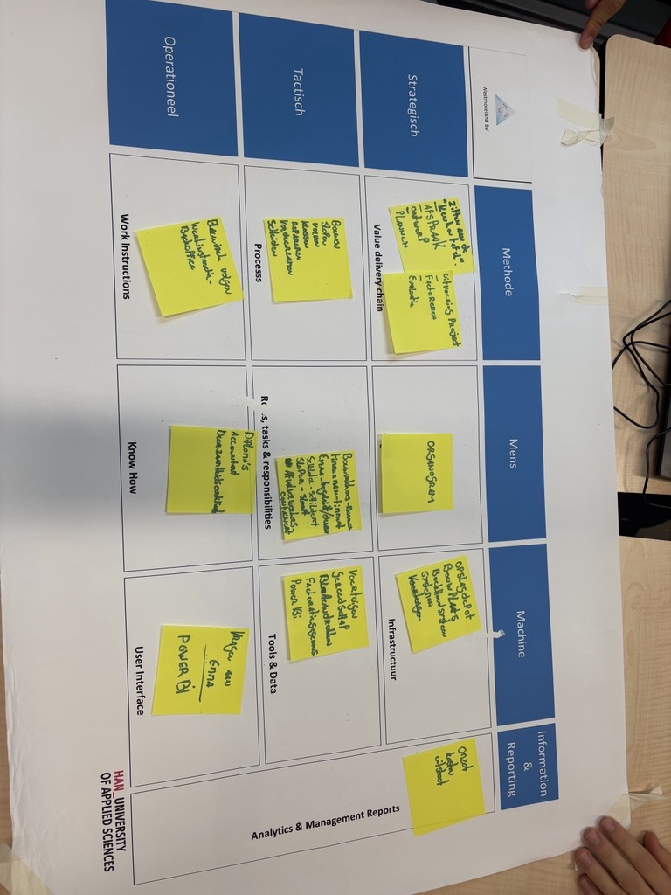
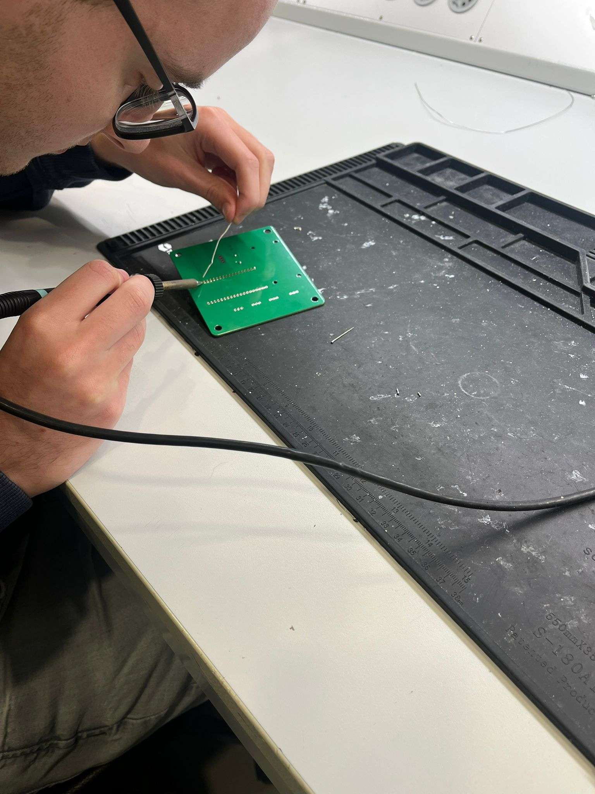
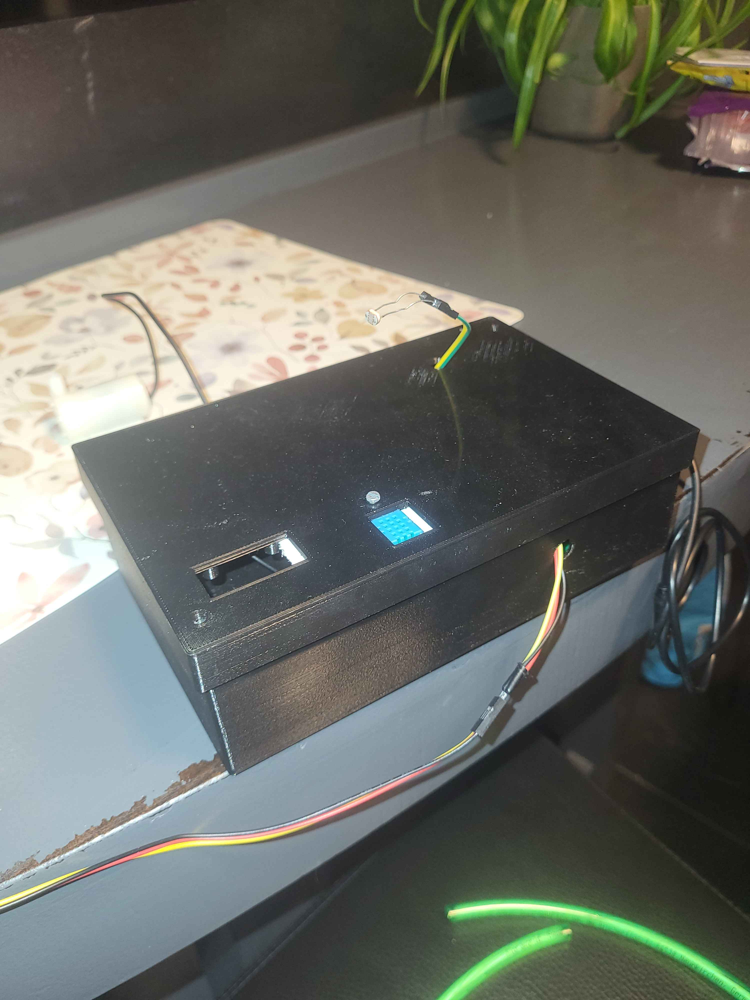

Welkom op de pagina van Jurre
Over mij
Mijn naam is Jurre en ik ben 22 jaar. Ik woon in Oss en Langenboom en zit in het 4e jaar van de opleiding HBO-ICT. In mijn vrije tijd ben ik graag bezig met gamen, programmeren en sport kijken. Ik volg nu de minor Smart Industry omdat ik het interessant vind om te zien hoe technologie ingezet kan worden om bedrijven efficiënter en slimmer te maken. Daarnaast wil ik tijdens deze minor mijn vaardigheden op het gebied van samenwerken en communiceren verbeteren, vooral binnen een multidisciplinair team.

Image of the day
Loading...
Smart-Me
Leerdoel 1
Mijn eerste leerdoel was het volgende:
"Ik wil mijn communicatie verbeteren door technische of vakinhoudelijke informatie op een duidelijke en begrijpelijke manier uit te leggen aan mensen uit andere disciplines, zodat zij beter begrijpen wat ik bedoel en we effectiever kunnen samenwerken."
Tijdens mijn meewerkstage kreeg ik vaak te horen dat ik mijn communicatie niet super goed afstelde op de doelgroep. Zo moest ik bijvoorbeeld een presentatie geven over iets wat ik geprogrammeerd had, maar de presentatie was voor de testers binnen het team die niet programmeren iets te ingewikkeld, hier had ik dus beter op moeten letten. Ook heb ik tijdens mijn opleiding niet eerder echt geoefend met het uitleggen van technische concepten aan mensen die hier minder verstand van hebben, daarom leek het mij goed om hier tijdens de minor aan te werken. Een situatie waarin ik dit heb kunnen oefenen was het moment waarop Milo het opzich nam om de projectwebsite te maken voor ons project bij Elk. Hij had hier niet zoveel ervaring mee, en toen heb ik hem geholpen bij het opzetten van GIT, zodat hij zijn code goed kon bijhouden en delen met de rest van het team (wat het voor het hele team makkelijker maakte). Ik heb hierbij geprobeerd om alles zo simpel mogelijk uit te leggen, zonder al te veel technische termen te gebruiken. Een ander voorbeeld was tijdens een overlegmoment bij Elk. Ik liet aan Elk weten dat het niet mogelijk ging zijn om API's te gebruiken voor het ophalen van de afvalgegevens, omdat deze niet beschikbaar waren. Johan was bij dit overleg aanwezig en vroeg gelijk wat API's nou eigenlijk precies waren. Ik heb toen geprobeerd om in simpele bewoordingen uit te leggen wat een API is en hoe het werkt, zonder te veel in technische details te treden. Al met al denk ik dat ik tijdens de minor wel wat stappen heb gezet in het verbeteren van mijn communicatie, vooral door bewust te zijn van mijn doelgroep en mijn uitleg hierop aan te passen.
Leerdoel 2
Mijn tweede leerdoel was het volgende:
"Ik wil de Design Thinking-methode toepassen om een effectief en gebruikersgericht ontwerp voor het Power BI dashboard over afval en afvalverwerking te realiseren."
Tijdens het project bij Elk heb ik de Design Thinking-methode toegepast om een gebruikersgericht ontwerp voor het Power BI-dashboard te realiseren.
In de empathiefase heb ik gesprekken gevoerd met verschillende stakeholders, zoals Emma en Karl van team duurzaamheid bij Elk, om hun behoeften en verwachtingen te begrijpen.
Zij waren de voornaamste gebruikers van het dashboard, dus het was belangrijk om hun perspectieven mee te nemen.
Ook heb ik gevraagd wat Kevin Balm (Power BI specialist bij Elk) belangrijk vond in een dashboard, zodat wij ons dashboard op een gelijke manier kunnen maken als bestaande dashboards van Elk.
In de define-fase heb ik de belangrijkste inzichten uit deze gesprekken samengevat in hoofdstuk 4.6.1 van ons onderzoek gezet.
Dit hielp om een duidelijk beeld te krijgen van wat het dashboard moest bevatten en welke functionaliteiten belangrijk waren voor de gebruikers.
De ideate-fase heb ik niet echt uitgevoerd, ik ben eigenlijk direct doorgegaan naar het prototype maken in Power BI.
Dit kwam omdat we al redelijk duidelijk hadden wat we wilden maken op basis van de gesprekken en de define-fase.
Voor het prototype heb ik rekening gehouden met de wensen van Emma en Karl, zoals het tonen van KPI's, en de eisen van Kevin Balm, zoals het gebruik van bepaalde kleuren en stijlen die passen bij de huisstijl van Elk.
In de test-fase heb ik het prototype laten zien aan Emma en Karl om ervoor te zorgen dat het dashboard aan hun verwachtingen voldoet.
Hier kwamen we er bijvoorbeeld achter dat we een KPI hadden opgenomen in het dashboard die niet relevant was voor hen, terwijl we die wel uit het gesprek met Emma hadden gehaald.
Dit hebben we toen aangepast op basis van hun feedback.
Door dit leerdoel heb ik geleerd hoe belangrijk het is om gebruikers gedurende het ontwerpproces te betrekken en hun feedback te blijven meenemen.
Ik heb gemerkt dat aannames, ook wanneer ze gebaseerd zijn op gesprekken, niet altijd volledig aansluiten bij wat gebruikers in de praktijk nodig hebben.
Het testen van een prototype met gebruikers helpt om dit inzichtelijk te maken en het ontwerp hierop aan te passen.
Als ik hier in de toekomst opnieuw aan werk, zou ik meer aandacht besteden aan de testfase door een prototype of dashboard eerder te delen, zodat gebruikers dit ook in hun eigen tijd kunnen testen.
Op die manier kan er meer gerichte feedback worden opgehaald en kan het ontwerp beter worden afgestemd op de daadwerkelijke behoeften van de gebruikers.
Analyseren van behoeften tav inzet technologie in organisatie
Tijdens dit project heb ik onderzocht waar de organisatie behoefte aan had op het gebied van technologie. Uit gesprekken met verschillende medewerkers bleek dat het maken van rapportages veel tijd kostte en dat data vaak handmatig werd verwerkt. Dit zorgde niet alleen voor extra werk, maar ook voor een grotere kans op fouten. Op basis van deze behoefte heb ik meegewerkt aan het ontwikkelen van een Power BI-dashboard. Het doel hiervan was om rapportages te automatiseren en inzichtelijker te maken voor de organisatie. Hierdoor hoeven medewerkers minder handmatige handelingen te verrichten en is de informatie sneller en betrouwbaarder beschikbaar. Bij het automatiseren van het proces liepen we tegen problemen aan met het opslaan van bestanden vanuit e-mails naar SharePoint via Power Automate. Samen met Luuk heb ik dit probleem geanalyseerd door verschillende oplossingen te testen. Uiteindelijk hebben we een werkende oplossing gevonden, waardoor het proces volledig geautomatiseerd kon worden en minder handmatig werk vereist is. Ik vond het waardevol dat we hier samen naar hebben gekeken, omdat we vanuit verschillende opleidingen elk een andere kijk hadden op het probleem. Dit heeft geholpen bij het beter aansluiten van de technische oplossing op de behoefte van de organisatie. Op deze manier heb ik bijgedragen aan het analyseren van de behoeften van de organisatie en het inzetten van passende technologie.
Overwegen –wijze van- inzet technologie
Tijdens het project heb ik hieraan gewerkt door verschillende opties te onderzoeken voor het ophalen van de afvalgegevens bij afvalverwerkers.
Ik heb persoonlijk gekeken naar het gebruik van API's en het gebruik van Power Apps.
API's zijn voor de toekomst van Elk een interessante optie, omdat ze realtime data kunnen leveren en makkelijk te integreren zijn met andere systemen.
Het gebruik van API's bleek uiteindelijk echter niet mogelijk omdat deze niet beschikbaar waren bij de afvalverwerkers.
Power Apps is een laagdrempelige manier om data te verzamelen en kan snel opgezet worden.
Het probleem hiervan is alleen dat het alleen binnen de organisatie van Elk gebruikt kan worden, en niet direct door de afvalverwerkers zelf.
Uiteindelijk is er gekozen voor een excel formulier wat door de afvalverwerkers ingevuld kan worden.
Dit is een simpele oplossing die wel de benodigde data oplevert, maar niet ideaal is voor de lange termijn, omdat het allemaal losse bestanden zijn die handmatig verwerkt moeten worden.
Ik vind wel dat we de juiste afwegingen hebben gemaakt op basis van de beschikbare opties en de behoeften van Elk.
Deze afwegingen passen goed bij wat ik tijdens deze minor heb geleerd.
Tijdens de 0-meting gaf ik aan dat ik al vaker bezig ben geweest met het onderzoeken van technologie binnen projecten.
Daarbij keek ik vooral naar wat technisch mogelijk was en hield ik minder rekening met de organisatie of opdrachtgever.
Tijdens deze minor heb ik geleerd dat dit juist heel belangrijk is.
Bij dit project werd duidelijk dat de beste technische oplossing niet altijd de meest haalbare oplossing is.
Het is belangrijk om ook te kijken naar wat praktisch werkt voor de organisatie en de mensen die ermee moeten werken, en dat inzicht neem ik mee in toekomstige projecten.
Bijdragen aan digitale transformatie organisatie; betrekken betrokkenen en draagvlak creëren
Tijdens dit project heb ik de organisatie actief betrokken bij het onderzoeksproces.
Wanneer ik ergens tegenaan liep, heb ik dit teruggekoppeld aan betrokkenen binnen de organisatie, zodat de oplossing goed bleef aansluiten op hun wensen en werkwijze.
Een voorbeeld hiervan is het vraagstuk rondom de CO₂-emissiefactoren.
Online was hier weinig eenduidige informatie over te vinden, omdat emissiefactoren per bedrijf sterk verschillen.
De factoren die we wel vonden liepen erg uiteen, waardoor ik twijfelde of de gebruikte waarden wel betrouwbaar waren.
Dit heb ik besproken met Mathieu en Emma tijdens een van de gesprekken.
Zij gaven mij tips over betrouwbare websites en gaven aan dat de exacte emissiefactor minder belangrijk was, zolang deze maar afkomstig was van een goede en onderbouwde bron.
Deze terugkoppeling hielp om het onderzoek voort te zetten op een manier die voor de organisatie werkbaar en acceptabel was.
Bij het ontwerpen van het Power BI-dashboard heb ik meerdere mensen binnen de organisatie om input gevraagd.
Ik heb gevraagd welke informatie zij belangrijk vonden, hoe zij de informatie wilden gebruiken en waar het dashboard aan moest voldoen.
Op basis hiervan heb ik het ontwerp gemaakt, zodat het dashboard daadwerkelijk gebruikt kan worden binnen de organisatie.
Hiermee heb ik niet alleen een technische oplossing opgeleverd, maar ook bijgedragen aan draagvlak voor het gebruik ervan.
Bij de 0-meting had ik nog geen ervaring met het bijdragen aan de digitale transformatie van een echte organisatie.
Tijdens mijn opleiding werkte ik vooral met verzonnen casussen of maakte ik programma’s voor docenten.
Door dit project heb ik geleerd hoe digitale transformatie in de praktijk werkt en hoe belangrijk het is om dit samen met een organisatie aan te pakken.
Ik weet nu beter hoe je stakeholders betrekt, hoe je omgaat met hun wensen en hoe je technologie inzet op een manier die echt waarde toevoegt voor de organisatie.
Samenwerken in multidisciplinair team
Tijdens deze minor heb ik veel geleerd van het samenwerken met anderen uit verschillende disciplines.
Ik heb vooral veel geleerd op het gebied van het gebruiken van bronnen en het zoeken naar goede en betrouwbare informatie.
Daarnaast heb ik meer inzicht gekregen in businessonderdelen zoals het BMC en het TOM, doordat teamleden hier meer kennis van hadden dan ik.
Tegelijkertijd heb ik ook mijn eigen kennis kunnen inzetten om anderen te helpen.
Zo heb ik Milo geholpen bij het opzetten van de projectwebsite.
Hierbij heb ik mijn technische kennis gedeeld en meegedacht over de structuur en opzet van de website.
Op deze manier heb ik niet alleen mijn eigen sterktes benut, maar ook bijgedragen aan de voortgang van het team.
Voor deze minor had ik nog niet eerder in een multidisciplinair projectteam gewerkt.
Tijdens mijn stage werkte ik wel samen met developers en testers, en merkte ik dat de communicatie met testers soms stroef verliep.
Dit had ik daarom meegenomen als leerdoel voor deze minor.
Tijdens het project heb ik hier bewust aan gewerkt door beter te luisteren, duidelijker te communiceren en meer rekening te houden met de invalshoeken van anderen.
Ik heb hierdoor geleerd hoe waardevol een gevarieerd team kan zijn en dat verschillende perspectieven juist voordelen opleveren.
In de praktijk zou ik teamleden vooral taken laten uitvoeren waar ze goed in zijn, om zo efficiënt mogelijk te werken.
Tegelijkertijd begrijp ik dat het binnen dit project belangrijk was om soms buiten je specialisatie te werken, omdat je daar juist veel van leert.
Deze ervaring heeft mij geholpen om beter samen te werken binnen een multidisciplinair team en om bewuster om te gaan met de kwaliteiten van anderen.
Professionele ontwikkeling als digitale transformator
Aan het begin van deze minor heb ik een 0-meting gedaan om te kijken waar ik stond. Hierin gaf ik aan dat ik technisch al best sterk was, maar dat ik weinig ervaring had met projecten voor een echte organisatie. Tijdens mijn opleiding werkte ik vooral met verzonnen casussen of maakte ik programma’s voor docenten. Ook hield ik bij eerdere projecten vooral rekening met wat technisch mogelijk was, en minder met de organisatie of opdrachtgever. Tijdens deze minor heb ik hier veel in geleerd. Ik heb beter leren werken met professionele en betrouwbare bronnen en weet nu beter hoe ik moet zoeken naar goede informatie. Bij het onderzoek naar emissiefactoren merkte ik dat informatie online vaak verschilt en niet altijd direct bruikbaar is. Door dit te bespreken met betrokkenen binnen de organisatie en feedback te vragen, heb ik geleerd hoe belangrijk het is om keuzes goed te onderbouwen en af te stemmen met de betrokkenen. Daarnaast heb ik mij ontwikkeld op het gebied van samenwerken en communiceren. Ik had als leerdoel om duidelijker te communiceren binnen een multidisciplinair team en beter rekening te houden met de invalshoeken van anderen. Tijdens het project heb ik hier bewust aan gewerkt door meer vragen te stellen, beter te luisteren en feedback serieus te nemen. Terugkijkend merk ik dat ik eerder vooral vanuit techniek dacht, en nu meer rekening ben gaan houden met de organisatie. Hier heb ik van geleerd, omdat ik nu beter begrijp dat het belangrijk is om eerst goed af te stemmen met de organisatie, omdat zij het uiteindelijke product gaan gebruiken. Door dit project weet ik beter hoe professionele ontwikkeling eruitziet binnen een realistisch project en hoe je techniek, samenwerking en organisatie met elkaar verbindt. Deze ervaringen neem ik mee in toekomstige projecten en mijn verdere studie.
Managementgame
Deze workshop werd gegeven door Yvonne. Tijdens de workshop hebben we een managementgame gespeeld. Als eerste kregen we een lange casus met informatie over het bedrijf. Vervolgens kregen we ook specifieke informatie over onze eigen rol. Ik en Andrew zaten in team Business. Tijdens de les van Yvonne gingen we dus een managementgame spelen. Ik maakte deel uit van het team Business Solution, samen met Andrew. We hebben onder andere een gesprek gevoerd met team ICT (Nick). Uit dat gesprek kreeg ik waardevolle feedback. Zo hoorde ik dat ik op een goede, structurele manier vragen stel, wat goed aansluit bij mijn rol binnen het team. Ook kreeg ik de tip om van tevoren met een duidelijk doel een vergadering in te gaan en dit doel expliciet te maken voor de andere persoon. Op die manier is voor iedereen helder wat er wordt verwacht en waar het gesprek naartoe moet.
Veranderbaarheid
Deze workshop ging over veranderbaarheid binnen organisaties en hoe je doelgericht beweging kunt creëren. Er werd gestart met zelfreflectie: wie ik ben, welke eigenschappen ik heb en hoe deze van invloed zijn op hoe ik veranderingen aanpak. Daarnaast werd aandacht besteed aan het kennen van de context van de organisatie, omdat elke organisatie een andere aanpak vraagt. Verder stond systeemdenken centraal, waarbij werd benadrukt dat problemen vaak terugkomen als je alleen symptomen oplost. Door vanuit meerdere perspectieven te kijken leer je beter begrijpen waar knelpunten zitten en waarom verandering soms moeizaam gaat. Met behulp van de DINAMO-methode hebben we met het groepje de veranderbereidheid van Elk in kaart gebracht, zodat we de projectaanpak hier beter op kunnen afstemmen. De workshop sloot af met het verbinden van mijn eigen leerdoelen aan wat de organisatie nodig heeft om verder te kunnen ontwikkelen.
Smart-Business
Elk
Tijdens de minor zijn we op bezoek geweest bij Elk, een bouwbedrijf gevestigd in Wijchen. ELK werkt veel met lean en dit stond dan ook centraal tijdens de presentatie die we daar kregen. Er werd uitgelegd hoe lean binnen het bedrijf wordt toegepast en waarom dit belangrijk is voor het efficiënt werken binnen bouwprojecten. Omdat ik samen met mijn projectgroep ook een project uitvoer bij Elk, waren wij de dag vóór dit bezoek al een keer bij het bedrijf geweest. Daardoor was een deel van de informatie voor ons al bekend, maar het was alsnog interessant om alles nogmaals te horen en nu ook in een bredere context te zien. Na de presentatie kregen we een rondleiding door het bedrijf en hebben we onder andere een woonkubus bekeken, wat een goed beeld gaf van hoe Elk haar projecten aanpakt. Daarnaast kregen we een opdracht waarbij we een technische oplossing moesten bedenken voor het scheiden van bouwafval. Samen met een paar anderen heb ik een concept bedacht waarbij een vrachtwagen met een lopende band bouwafval automatisch scheidt met behulp van AI. Deze oplossing werd goed ontvangen en uiteindelijk zelfs als beste idee gekozen door de mensen van Elk, wat natuurlijk erg leuk was. Al met al vond ik het een interessant en leerzaam bedrijfsbezoek, vooral omdat het direct aansloot bij het project waar ik samen met mijn groep al mee bezig was.
Taken van de Toekomst
De workshop Taken van de Toekomst werd gegeven door Jos Sanders en ging over hoe werk en functies in de toekomst veranderen. Tijdens deze workshop werd niet zozeer gekeken naar complete functies, maar juist naar de taken waar een functie uit bestaat. Het idee hierachter is dat functies veranderen, maar taken vaak verschuiven, verdwijnen of juist belangrijker worden. Tijdens de workshop hebben we in groepen gekeken naar verschillende functies en deze opgesplitst in losse taken. Vervolgens moesten we per taak inschatten of deze in de toekomst zou groeien, krimpen, stabiel blijven of verdwijnen. Dit maakte goed duidelijk welke impact technologie en automatisering kunnen hebben op werk. Ook werd er stilgestaan bij nieuwe taken die mogelijk ontstaan door deze veranderingen. Wat ik interessant vond aan deze workshop, is dat het je laat nadenken over je eigen toekomst en ontwikkeling, in plaats van alleen over banen die misschien verdwijnen. Het gaf een realistisch beeld van hoe werk verandert en dat je hier zelf ook op kunt inspelen. Al met al vond ik het een nuttige en laagdrempelige workshop die goed paste binnen de minor Smart Industry.
Smart recht
We hebben van Ellen Lakens-Van Veldhoven en Martijn Hendriks een workshop gekregen over rechten en de AI-act. Een groot gedeelte van deze workshop ging over wat je met AI wel en niet mag doen en dan voornamelijk de verboden dingen. Zo mag je bijvoorbeeld geen AI gebruiken om gezichten te herkennen in openbare ruimtes, omdat dit inbreuk maakt op de privacy van mensen. Ook mag je geen AI gebruiken om discriminerende beslissingen te nemen, zoals bij het aannemen van personeel. Daarnaast is het belangrijk om transparant te zijn over het gebruik van AI en mensen te informeren als ze met een AI-systeem te maken hebben. Tijdens het tweede deel van de workshop hebben we een alternatieve casus gekregen over onze project casus van Elk. We moesten nadenken over de mogelijke juridische problemen die zouden kunnen ontstaan bij het gebruik van AI in onze casus en hoe we deze problemen kunnen voorkomen. Twee teams (Voorstanders en tegenstanders van AI) moesten vervolgens een debat voeren over de voor- en nadelen van het gebruik van AI in onze casus. Dit was een interessante oefening die ons hielp om na te denken over de ethische en juridische implicaties van het gebruik van AI in de echte wereld.
Process mining
De process mining workshop werd gegeven door Thomas en ging over het analyseren van processen binnen organisaties aan de hand van data. Het is een combinatie van business en data, waarbij wordt gekeken naar hoe processen in de praktijk verlopen op basis van gelogde informatie uit systemen. Tijdens de workshop kregen we eerst een algemene uitleg over wat process mining is en waarvoor het gebruikt kan worden. Daarna zijn we aan de slag gegaan met de software Disco. Met deze tool kun je processen visueel maken door data te analyseren. Wat hierbij al snel duidelijk werd, is dat de kwaliteit van de data erg belangrijk is. Als de data niet volledig of niet goed is vastgelegd, krijg je ook geen betrouwbaar beeld van het proces. Tijdens de workshop zagen we verschillende voorbeelden van process mining maps, waarin duidelijk werd hoe processen kunnen afwijken en waar knelpunten kunnen ontstaan. Dit maakt process mining een handige tool om inzicht te krijgen in processen binnen organisaties. Hoewel het onderwerp in het begin wat theoretisch overkwam, kreeg ik door het werken met de software een beter beeld van hoe process mining in de praktijk toegepast kan worden. Al met al vond ik het een leerzame workshop. Het liet goed zien hoe data gebruikt kan worden om processen inzichtelijk te maken en te verbeteren, ook al ligt dit onderwerp niet direct binnen mijn persoonlijke interesses.
Tom model
De workshop over het TOM-model werd gegeven door Paul Kalis en ging over het operationeel inrichten van organisaties. Tijdens deze workshop werd uitgelegd hoe organisaties functioneren als een samenhangend geheel van mensen, middelen en processen. Het TOM-model helpt hierbij om inzicht te krijgen in hoe een organisatie is opgebouwd en hoe veranderingen of innovaties impact kunnen hebben op verschillende onderdelen. In het begin van de workshop kregen we vooral veel uitleg over het idee achter het model en waarom het belangrijk is om verder te kijken dan alleen één probleem of één afdeling. Er werd benadrukt dat organisaties gezien kunnen worden als complexe systemen, waarbij een kleine verandering grote gevolgen kan hebben op andere plekken. Dit werd toegelicht aan de hand van verschillende praktijkvoorbeelden en cases, wat het een stuk duidelijker maakte. Daarna zijn we dieper ingegaan op het TOM-model, waarin een organisatie wordt opgedeeld in verschillende domeinen, verspreid over strategisch, tactisch en operationeel niveau. Hierbij wordt gekeken naar de samenwerking tussen mens, machine en methode. Door deze indeling krijg je beter inzicht in waar knelpunten zitten en welke onderdelen van de organisatie geraakt worden door een innovatie of verandering. Wat ik zelf interessant vond, waren de casussen die tijdens de workshop werden besproken, zoals die van een tuinman en een chatbot binnen een organisatie. Deze voorbeelden maakten het model een stuk praktischer en lieten goed zien hoe breed de impact van een innovatie kan zijn. Tegelijkertijd vond ik het soms wel veel informatie en vrij theoretisch, waardoor het lastig was om alles direct te blijven volgen. Al met al gaf de workshop mij een beter beeld van hoe organisaties operationeel in elkaar zitten en hoe je met behulp van het TOM-model gestructureerd kunt nadenken over veranderingen. Hoewel het niet het meest technische onderwerp was, snap ik nu beter waarom dit model binnen de minor Smart Industry relevant is.
Smart-Connection
Website en API
De lessen over het bouwen van een website en het werken met API’s werden gegeven door Hubert. Ik heb al heel vaak met websites en API’s gewerkt, dus veel van de informatie die tijdens deze workshops werd behandeld, was voor mij niet nieuw. In deze website heb ik 3 API's verwerkt: de NASA API voor de afbeelding van de dag, een weer-API voor het het aantal graden in Oss en quotes API voor een inspirerende quote. Van deze API's was de NASA API het lastigst om te integreren, omdat deze een API-sleutel vereisten deze verschillende typen content kan teruggeven (afbeeldingen en video's). Ik ben persoonlijk niet super goed in het ontwerpen van websites, daarom heb ik gebruik gemaakt van bootstrap wat mij veel standaard opties geeft voor de layout. Hierdoor ziet de website er wel enorm generiek uit, maar dat vind ik zelf prima omdat ik ook niet de focus wilde leggen op het design van de website.
AI
Tijdens de minor hebben we 3 verschillende AI-workshops gekregen. De eerste ging over de basisbegrippen van data science en AI en werd gegeven door Erwin Folmer van Kadaster. Tijdens deze presentatie werd bijvoorbeeld uitgelegd wat neurale netwerken zijn en hoe deze binnen AI worden gebruikt. Ik vond vooral het idee interessant dat neurale netwerken patronen kunnen herkennen door te leren van data en fouten. De manier waarop dit wordt toegepast in industriële omgevingen sprak mij aan, omdat het laat zien hoe processen slimmer en autonomer kunnen worden. De tweede workshop werd gegeven door Matthijs de Jonge en ging vooral over de AI Fundamentals. In deze workshop heb ik vooral dingen geleerd over patronen en hoe AI deze kan herkennen. Zo werd er bijvoorbeeld uitgelegd hoe je op basis van de flipper en snavel lengte van pinguïns kunt voorspellen tot welke soort ze behoren. Dit soort voorbeelden vond ik interessant omdat het laat zien hoe AI kan worden toegepast in verschillende domeinen, zoals biologie. De laatste workshop werd gegeven door Onno Huijgen en ging over het werken met data van een case. Tijdens de workshop hebben we bijvoorbeeld gewerkt met een Iris dataset en moesten we met het programma Orange Data Mining patronen herkennen in de data. Dit soort oefeningen vond ik erg leuk, omdat je echt zelf aan de slag gaat en minder theorie krijgt. Al met al vond ik de AI-workshops interessant, vooral omdat ze lieten zien hoe AI kan worden toegepast in verschillende domeinen en hoe het processen slimmer kan maken.
Smart-Technology
Internet of Things
Voor het vak Internet of Things was het doel om een IoT-schakeling te ontwikkelen die automatisch de lichtintensiteit en de bodemvochtigheid van een plant regelt. Tijdens de lessen kregen we uitleg over de werking van de hardware, het opzetten van de IDE en het programmeren van de schakeling. Dit was voor mij erg makkelijk omdat ik dit eerder gedaan heb de de opleiding HBO-ICT volg. Wat ik nog niet had gedaan was het koppelen van een schakeling aan een database in de cloud (in dit geval Influxdb). Deze database werkte met time-series data, wat nieuw voor mij was. Desondanks vond ik het leuk omdat het wel weer een tijdje gelden was en mijn profiel binnen de opleiding hier niet echt meer iets mee doet. Het ontwerpen van een PCB was wel nieuw voor mij. Dit moest gemaakt worden zodat er geen losse draden door de plantenbak zouden lopen (of zo min mogelijk). Dit ontwerpen moest met het programma Eagle gedaan worden. Ik kende dit programma nog niet en vond het persoonlijk erg lastig om doorheen te navigeren. Ik heb dit daarom ook een beetje samen gedaan met Florian. Naast het steeds opzoeken van de documentatie van Eagle, hebben we ook elkaar veel geholpen om het ontwerp rond te krijgen. Tijdens de soldeer workshop moesten we vervolgens de pin-headers op de PCB solderen. Ik had ongeveer 10 jaar geleden wel al eens gesoldeerd, en kende de basis dus wel maar het was toch weer even wennen. Dit onderdeel vond ik persoonlijk wel het leukste van de hele IoT workshop, omdat het ook echt iets fysieks is wat je maakt en ik dit normaal niet zo vaak doe. Veel van de informatie die tijdens de workshops werd behandeld, kende ik al van eerdere projecten en opleidingen maar alsnog vond ik het erg leuk. Hieronder is de plantenbak te zien en wat foto's.
 Het plantwatersysteem heb ik ook gemaakt. in de video hieronder is te zien dat er water in de plant komt
Nadat ik de lichtsensor afdek komt er water uit. Dit heb ik zo gedaan omdat ik niet kan triggeren op basis van de bodemvochtigheid sensor omdat deze geen verschillen laat zien in de zo'n korte tijd.
De klikaankluit om bijvoorbeeld een lamp mee te bedienen werkte ook, alleen durfde ik hem na de test uit de video niet meer te gebruiken omdat er water op was gekomen.
Het plantwatersysteem heb ik ook gemaakt. in de video hieronder is te zien dat er water in de plant komt
Nadat ik de lichtsensor afdek komt er water uit. Dit heb ik zo gedaan omdat ik niet kan triggeren op basis van de bodemvochtigheid sensor omdat deze geen verschillen laat zien in de zo'n korte tijd.
De klikaankluit om bijvoorbeeld een lamp mee te bedienen werkte ook, alleen durfde ik hem na de test uit de video niet meer te gebruiken omdat er water op was gekomen.
Additive Manufacturing
De additive manufacturing workshops zijn gegeven door Herold Cremers, waarin wij veel hebben geleerd over de verschillende technieken en toepassingen van additive manufacturing. Het begon met een presentatie die elk projectgroepje moest geven over een werkgebied waarin additive manufacturing wordt toegepast. Ik en mijn groepje hadden als werkgebied de industrie en hebben het gehad over de ruimtevaart en de auto-industrie. De workshops hierna zijn we bezig geweest met het ontwerpen van een behuizing voor het plant-water systeem. Dit vond ik persoonlijk wel lastig. Ik had nog nooit gewerkt met Solidworks of een soort gelijk programma en heb nog nooit iets ontworpen voor 3D-printen. Hierdoor had ik in eerste instantie een redelijk simpel bakje gemaakt. Nadat ik in Arnhem aankwam en het ontwerp aan Herold liet zien, gaf hij mij wat tips en tricks om het ontwerp te verbeteren. Zoals mounting holes voor de deksel, hoe je het beste de dht sensor kon integreren in het bakje, en tips over hoe ik mijn LCD scherm wilde plaatsen. Deze feedback heb ik terplekke aangepast en na een aantal uur kon ik het ontwerp 3D-printen. Achteraf heb ik wel wat fouten gemaakt in het ontwerp. Zo paste het LCD scherm niet, de afmetingen in solidworks klopten achteraf niet. Dit schermpje zit dus gewoon in het bakje aangesloten maar je kunt hem vanaf de buitenkant niet zien.
